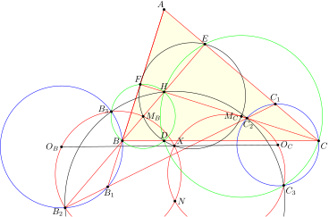

It is a classical fact that every \(n\)-element set of positive reals has at least
\(\binom{n+1}{2}+1\) distinct subset sums, with equality exactly for homogeneous
arithmetic progressions when \(n \geq 4\). We establish stability versions of this
inverse theorem in two regimes. First, for any parameter \(M \leq n-4\), we precisely
characterize the \(n\)-element sets of positive reals with at most
\(\binom{n+1}{2}+1+M\) subset sums. Second, for any constant \(C\), we provide a
characterization, sharp up to constants, of the \(n\)-element sets of positive reals
with at most \(Cn^2\) distinct subset sums. Along the way, we constrain, for any fixed
\(d \geq 2\), the structure of \(n\)-element subsets of \(\mathbb{R}^d\) with
\(o(n^{d+1})\) subset sums.
For distinct real numbers \(a_1,\ldots,a_n\) and distinct real numbers
\(b_1,\ldots,b_n\), consider the sum
\(S=\sum_{i=1}^n a_i b_{\pi(i)}\) as \(\pi\) ranges over the permutations of
\([n]\). We show that this sum always assumes at least \(\Omega(n^3)\) distinct
values, which is optimal. This support bound complements recent work of Do,
Nguyen, Phan, Tran, and Vu on the anticoncentration properties of \(S\) when
\(\pi\) is chosen uniformly at random.
Taming Irrationality: An Invariance Principle for the Random Billiard Walk
The random billiard walk is a stochastic process \((L_t)_{t\geq 0}\) in which a laser
moves through the Coxeter arrangement of an affine Weyl group in \(\mathbb{R}^d\),
reflecting at each hyperplane with probability \(p\in(0,1)\) and transmitting
unchanged otherwise. Defant, Jiradilok, and Mossel introduced this process from the
perspective of algebraic combinatorics and established that, for initial directions
aligned with the coroot lattice, \(L_t/\sqrt{t}\) converges to a centered spherical
Gaussian. We bring analytic tools from ergodic theory and probability to the problem
and extend this central limit theorem to all initial directions. More strongly, we
prove the rescaled trajectories \(t\mapsto n^{-1/2}L_{tn}\) converge to isotropic
Brownian motion. Away from directions with rational dependencies, the limiting
covariance varies continuously in \(p\) and the initial direction.
Olympiad problems
I've participated in several competitons, such as the IMO, IPhO and ICPC. I'm still actively involved with these communities through teaching, mentoring and problem writing. Here are some of the problems I've written.
Problem (USA TST 2026 P4).
Let \(n\) be a positive integer. In the infinite lattice \(\mathbb Z^2\),
\(n\) points are colored red while the rest are colored blue. Each red point is
labeled with the distance to the nearest blue point in the same row or column.
Find the smallest real number \(\alpha\) for which the sum of all labels does not
exceed \(100n^\alpha\), independent of \(n\) and the placement of the red points.
Note: A row is the set of points with a given \(y\)-coordinate, and a column
is the set of points with a given \(x\)-coordinate.
Problem (USA TST 2026 P5).
Let \(ABC\) be an acute triangle, and \(M\) the midpoint of \(BC\). Let
\(\omega\) be the circumcircle of the triangle formed by \(BC\) and the two
common tangents of circles \((ABM)\) and \((ACM)\).
Prove that the radical axis of \((ABC)\) and \(\omega\), the internal bisector
of \(\angle BAC\), and the perpendicular bisector of \(AM\) are concurrent.
Problem (USA TSTST 2025 P9).
Let acute triangle \(ABC\) have orthocenter \(H\). Let \(B_1,C_1,B_2,C_2\)
be collinear points which lie on lines \(AB, AC, BH,\) and \(CH\), respectively.
Let \(\omega_B\) and \(\omega_C\) be the circumcircles of triangles
\(BB_1B_2\) and \(CC_1C_2\), respectively.
Prove that the radical axis of \(\omega_B\) and \(\omega_C\) intersects the line
through their centers on the nine-point circle of triangle \(ABC\).

Problem (USA TST 2025 P3).
Let \(\Omega\) be a convex \(2025\)-gon, and \(P\) and \(Q\) isogonal conjugates
inside it. Construct the following sequences of polygons:
\(\mathcal P_1=\Omega\), and for \(i\geq 2\), \(\mathcal P_i\) is the
\(2025\)-gon formed by the perpendicular bisectors of the segments joining
\(P\) to each of the \(2025\) vertices of \(\mathcal P_{i-1}\).
\(\mathcal Q_1=\Omega\), and for \(i\geq 2\), \(\mathcal Q_i\) is the
\(2025\)-gon formed by the perpendicular bisectors of the segments joining
\(Q\) to each of the \(2025\) vertices of \(\mathcal Q_{i-1}\).
Prove \(\mathcal P_{2025}, \mathcal Q_{2025}\) are cyclic, and the line through
their circumcenters is parallel to \(PQ\).